import numpy as np
import seaborn as snssns.get_dataset_names()['anagrams',
'anscombe',
'attention',
'brain_networks',
'car_crashes',
'diamonds',
'dots',
'dowjones',
'exercise',
'flights',
'fmri',
'geyser',
'glue',
'healthexp',
'iris',
'mpg',
'penguins',
'planets',
'seaice',
'taxis',
'tips',
'titanic']tips = sns.load_dataset('tips')
iris = sns.load_dataset('iris')
titanic = sns.load_dataset('titanic')
planets = sns.load_dataset('planets')tips| total_bill | tip | sex | smoker | day | time | size | |
|---|---|---|---|---|---|---|---|
| 0 | 16.99 | 1.01 | Female | No | Sun | Dinner | 2 |
| 1 | 10.34 | 1.66 | Male | No | Sun | Dinner | 3 |
| 2 | 21.01 | 3.50 | Male | No | Sun | Dinner | 3 |
| 3 | 23.68 | 3.31 | Male | No | Sun | Dinner | 2 |
| 4 | 24.59 | 3.61 | Female | No | Sun | Dinner | 4 |
| ... | ... | ... | ... | ... | ... | ... | ... |
| 239 | 29.03 | 5.92 | Male | No | Sat | Dinner | 3 |
| 240 | 27.18 | 2.00 | Female | Yes | Sat | Dinner | 2 |
| 241 | 22.67 | 2.00 | Male | Yes | Sat | Dinner | 2 |
| 242 | 17.82 | 1.75 | Male | No | Sat | Dinner | 2 |
| 243 | 18.78 | 3.00 | Female | No | Thur | Dinner | 2 |
244 rows × 7 columns
sns.scatterplot(x='tip', y='total_bill', data=tips)<Axes: xlabel='tip', ylabel='total_bill'>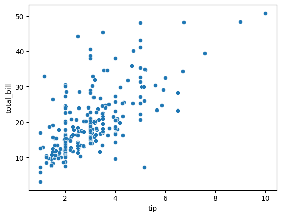
sns.scatterplot(x='tip', y='total_bill',
data=tips, hue='day',
size='size', palette='YlGnBu')<Axes: xlabel='tip', ylabel='total_bill'>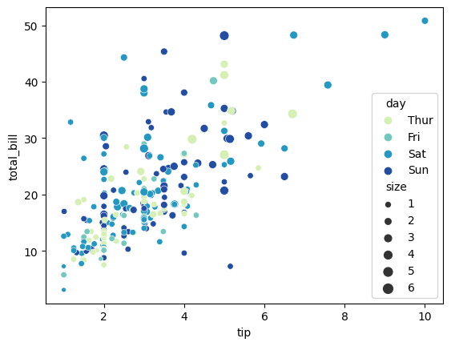
sns.histplot(tips['tip'], kde=True, bins=15)<Axes: xlabel='tip', ylabel='Count'>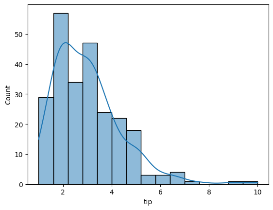
sns.displot(tips['tip'], kde=True, bins=15)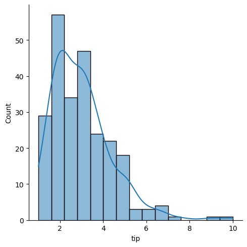
sns.barplot(x='sex', y='tip', data=tips, palette='YlGnBu')<Axes: xlabel='sex', ylabel='tip'>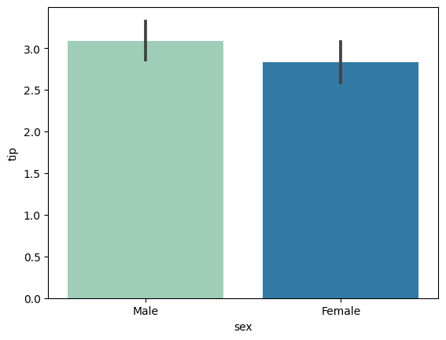
sns.boxplot(x='day', y='tip', data=tips, hue='sex', palette='YlGnBu')<Axes: xlabel='day', ylabel='tip'>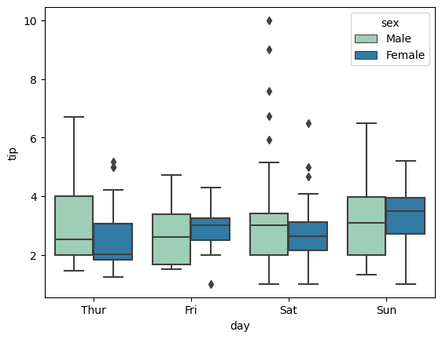
sns.stripplot(x='day', y='tip', data=tips, hue='sex', palette='YlGnBu')<Axes: xlabel='day', ylabel='tip'>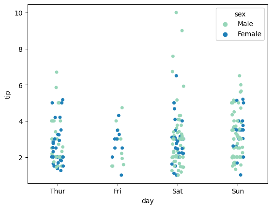
sns.stripplot(x='day', y='tip',
data=tips, hue='sex',
dodge=True, palette='YlGnBu')<Axes: xlabel='day', ylabel='tip'>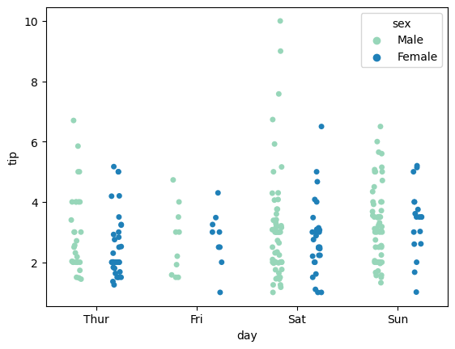
sns.jointplot(x='tip', y='total_bill', data=tips)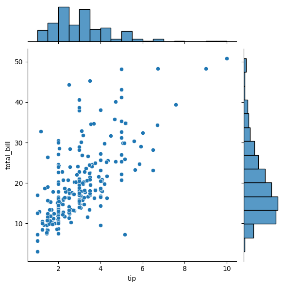
sns.jointplot(x='tip', y='total_bill', data=tips, kind='reg')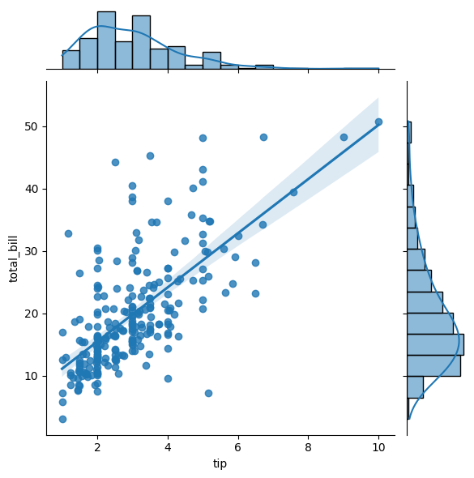
sns.jointplot(x='tip', y='total_bill', data=tips, kind='kde', fill=True)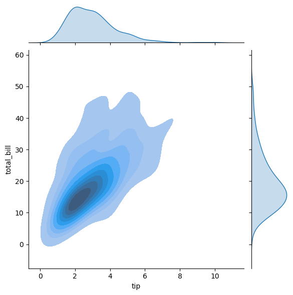
sns.jointplot(x='tip', y='total_bill',
data=tips, kind='kde',
fill=True, cmap='YlGnBu')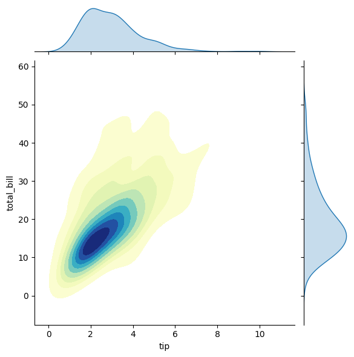
sns.jointplot(x='tip', y='total_bill',
data=tips, kind='hex') 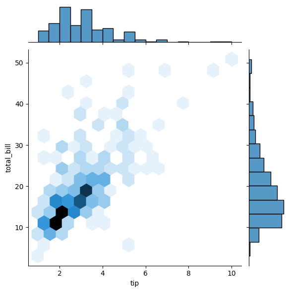
titanic| survived | pclass | sex | age | sibsp | parch | fare | embarked | class | who | adult_male | deck | embark_town | alive | alone | |
|---|---|---|---|---|---|---|---|---|---|---|---|---|---|---|---|
| 0 | 0 | 3 | male | 22.0 | 1 | 0 | 7.2500 | S | Third | man | True | NaN | Southampton | no | False |
| 1 | 1 | 1 | female | 38.0 | 1 | 0 | 71.2833 | C | First | woman | False | C | Cherbourg | yes | False |
| 2 | 1 | 3 | female | 26.0 | 0 | 0 | 7.9250 | S | Third | woman | False | NaN | Southampton | yes | True |
| 3 | 1 | 1 | female | 35.0 | 1 | 0 | 53.1000 | S | First | woman | False | C | Southampton | yes | False |
| 4 | 0 | 3 | male | 35.0 | 0 | 0 | 8.0500 | S | Third | man | True | NaN | Southampton | no | True |
| ... | ... | ... | ... | ... | ... | ... | ... | ... | ... | ... | ... | ... | ... | ... | ... |
| 886 | 0 | 2 | male | 27.0 | 0 | 0 | 13.0000 | S | Second | man | True | NaN | Southampton | no | True |
| 887 | 1 | 1 | female | 19.0 | 0 | 0 | 30.0000 | S | First | woman | False | B | Southampton | yes | True |
| 888 | 0 | 3 | female | NaN | 1 | 2 | 23.4500 | S | Third | woman | False | NaN | Southampton | no | False |
| 889 | 1 | 1 | male | 26.0 | 0 | 0 | 30.0000 | C | First | man | True | C | Cherbourg | yes | True |
| 890 | 0 | 3 | male | 32.0 | 0 | 0 | 7.7500 | Q | Third | man | True | NaN | Queenstown | no | True |
891 rows × 15 columns
sns.pairplot(titanic.select_dtypes(['number']), hue='pclass')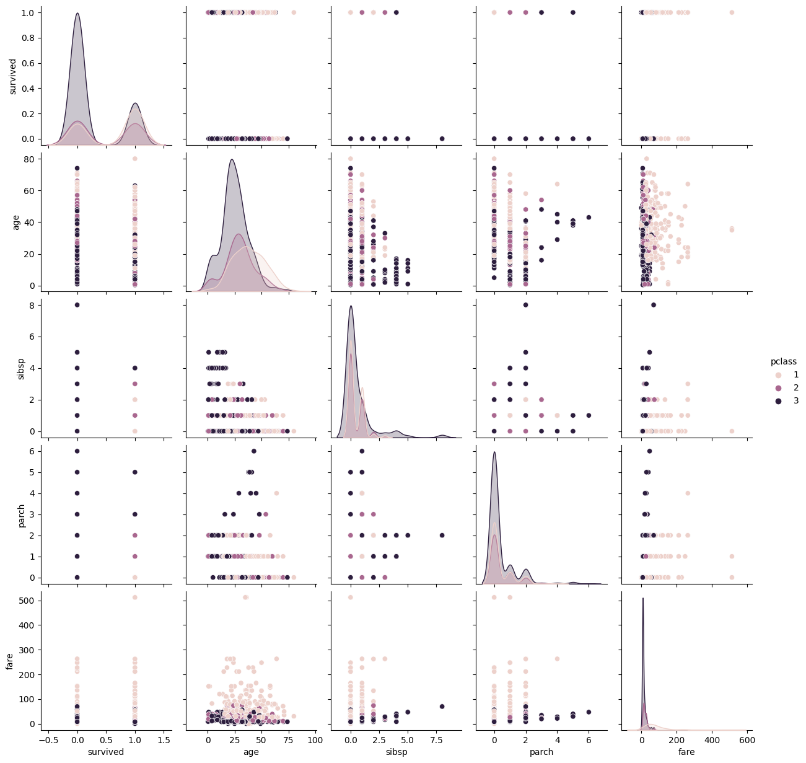
titanic.select_dtypes(['number']).corr()| survived | pclass | age | sibsp | parch | fare | |
|---|---|---|---|---|---|---|
| survived | 1.000000 | -0.338481 | -0.077221 | -0.035322 | 0.081629 | 0.257307 |
| pclass | -0.338481 | 1.000000 | -0.369226 | 0.083081 | 0.018443 | -0.549500 |
| age | -0.077221 | -0.369226 | 1.000000 | -0.308247 | -0.189119 | 0.096067 |
| sibsp | -0.035322 | 0.083081 | -0.308247 | 1.000000 | 0.414838 | 0.159651 |
| parch | 0.081629 | 0.018443 | -0.189119 | 0.414838 | 1.000000 | 0.216225 |
| fare | 0.257307 | -0.549500 | 0.096067 | 0.159651 | 0.216225 | 1.000000 |
sns.heatmap(titanic.select_dtypes(['number']).corr(),
annot=True, cmap='YlGnBu')<Axes: >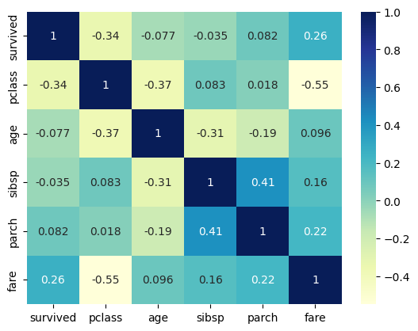